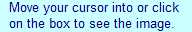

Use the triangle symbol from “Wingdings 3”
Sections:
Installing the “Wingdings 3” font
Note: you do not need to do this if you have “Wingdings 3.”- If you do not have the “Wingdings 3” font file, click here to download it. You should save it to a location you will remember, such as your desktop, downloads folder, or documents folder.
-
Click Start > Control Panel.
 -
Go to the “Fonts” folder. You may have to enable “Classic view” or “All Control Panel Items”.
-
Drag the “WINGDINGS3” font file to the “Fonts” folder.
- The font should install automatically. You may need to close and re-open some programs before they will use the font.
{kind=link}
{kind=link}
{kind=link}
← Back to home
Getting the triangle symbol—method 1
-
Go to “Start” > “Programs” > “Accessories” > “System Tools” > “Character Map”.
-
In the “Font” drop-down menu, select “Wingdings 3” and then click on the triangle symbol (you may need to scroll down).
- Click the “Select” button. The triangle symbol should appear in the white box to the left of the button. If it does, click “Copy”.
- You can now paste the triangle symbol into Microsoft Word or another program.
{kind=link}
{kind=link}
← Back to home
Getting the triangle symbol—method 2
Note: this method only works for Microsoft Office programs (the examples were made with Microsoft Word, but the process is the same in Excel and PowerPoint).-
Go to the “Insert” menu and select “Symbol...”
-
In the “Font:” drop-down menu, select “Wingdings 3.” Then select the triangle symbol (you may need to scroll down) and click “Insert”.
- The symbol will be inserted wherever you were typing. You can highlight and then copy and paste the symbol to skip the “Insert” > “Symbol...” step, however the Insert Symbol window does include a record of the most recently used symbols.
{kind=link}
{kind=link}
← Back to home